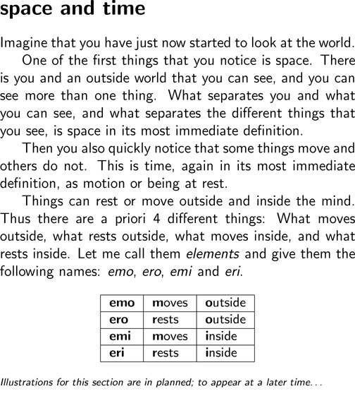
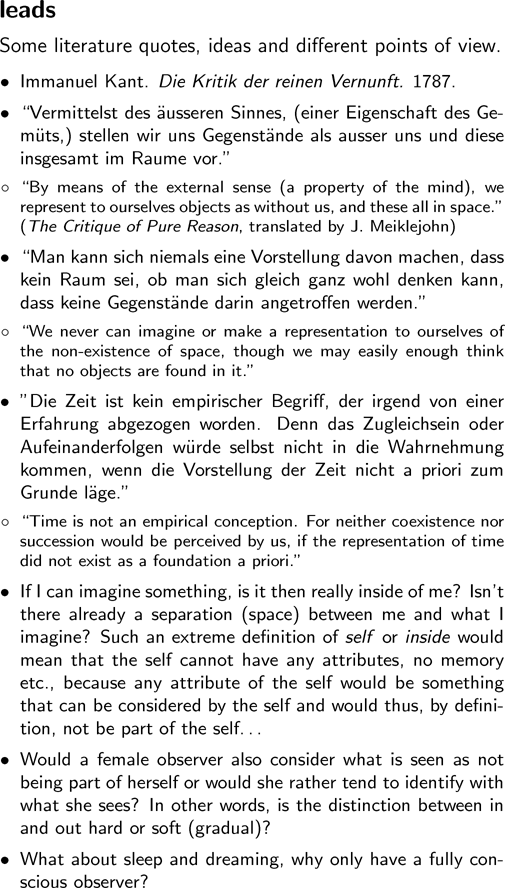

i i i i i i i i i i i i |
   space and time Imagine that you have just now started to look at the world. One of the first things that you notice is space. There is you and an outside world that you can see, and you can see more than one thing. What separates you and what you can see, and what separates the different things that you see, is space in its most immediate definition. Then you also quickly notice that some things move and others do not. This is time, again in its most immediate definition, as motion or being at rest. Things can rest or move outside and inside the mind. Thus there are a priori 4 different things: What moves outside, what rests outside, what moves inside, and what rests inside. Let me call them \textit{elements} and give them the following names: \textit{emo}, \textit{ero}, \textit{emi }and \textit{eri}. emo moves outside ero rests outside emi moves inside eri rests inside Illustrations for this section are in planned; to appear at a later time... leads Some literature quotes, ideas and different points of view. - Immanuel Kant. Die Kritik der reinen Vernunft. 1787. - "Vermittelst des äusseren Sinnes, (einer Eigenschaft des Gemüts,) stellen wir uns Gegenstände als ausser uns und diese insgesamt im Raume vor." - "By means of the external sense (a property of the mind), we represent to ourselves objects as without us, and these all in space." (The Critique of Pure Reason, translated by J. Meiklejohn) - "Man kann sich niemals eine Vorstellung davon machen, dass kein Raum sei, ob man sich gleich ganz wohl denken kann, dass keine Gegenstände darin angetroffen werden." - "We never can imagine or make a representation to ourselves of the non-existence of space, though we may easily enough think that no objects are found in it." - "Die Zeit ist kein empirischer Begriff, der irgend von einer Erfahrung abgezogen worden. Denn das Zugleichsein oder Aufeinanderfolgen würde selbst nicht in die Wahrnehmung kommen, wenn die Vorstellung der Zeit nicht a priori zum Grunde läge.'' - "Time is not an empirical conception. For neither coexistence nor succession would be perceived by us, if the representation of time did not exist as a foundation a priori." - If I can imagine something, is it then really inside of me? Isn't there already a separation (space) between me and what I imagine? Such an extreme definition of self or inside would mean that the self cannot have any attributes, no memory etc., because any attribute of the self would be something that can be considered by the self and would thus, by definition, not be part of the self... - Would a female observer also consider what is seen as not being part of herself or would she rather tend to identify with what she sees? In other words, is the distinction between in and out hard or soft (gradual)? - What about sleep and dreaming, why only have a fully conscious observer? |